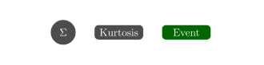
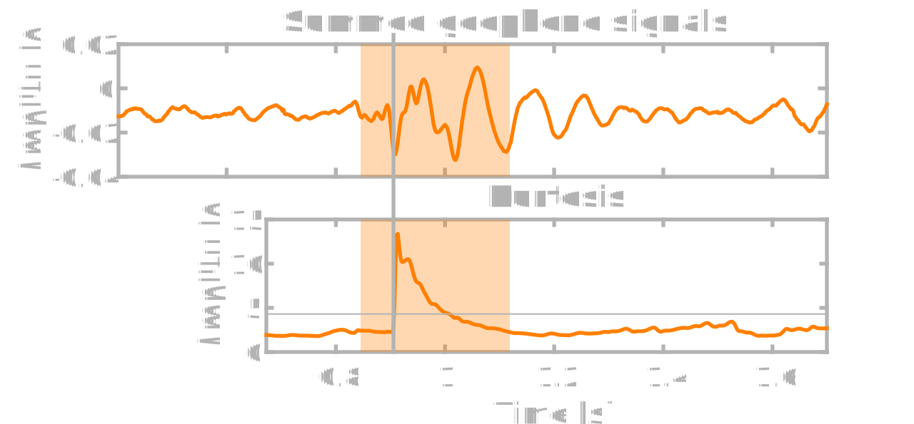
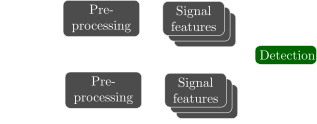
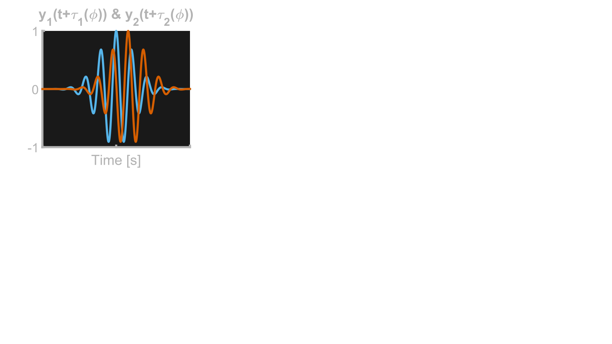
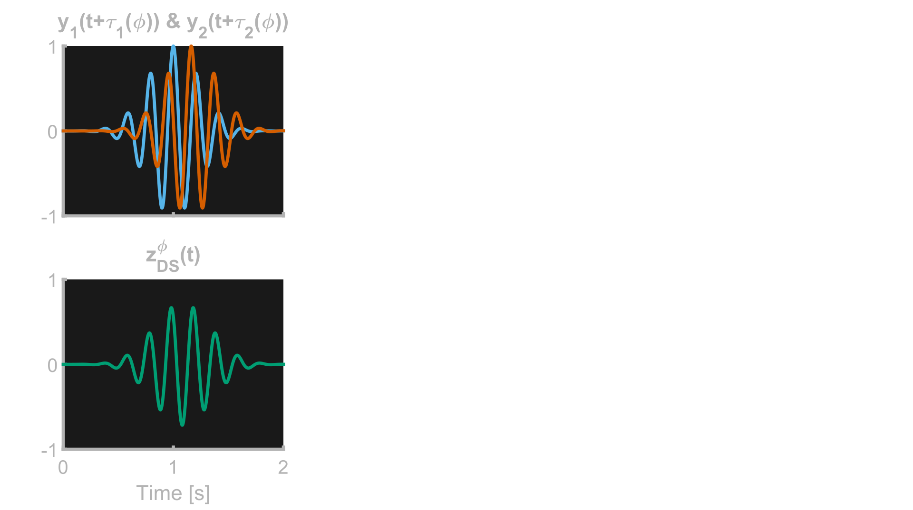
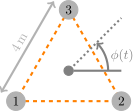
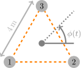
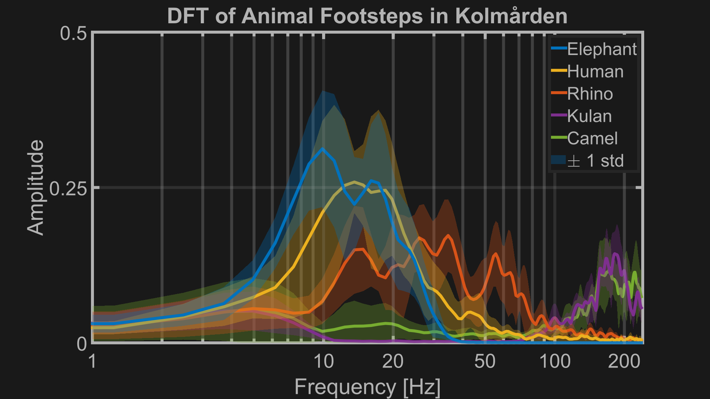
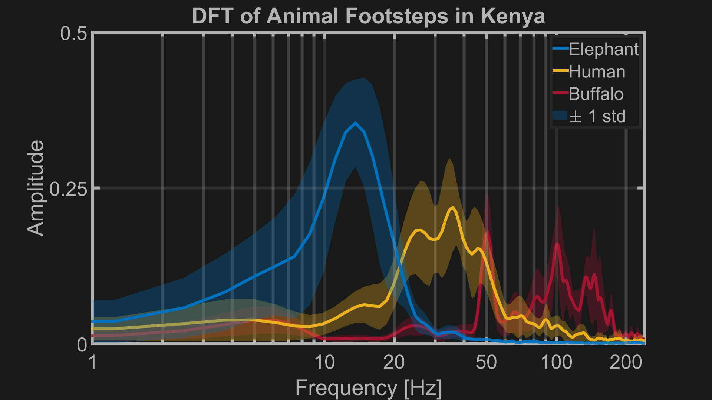
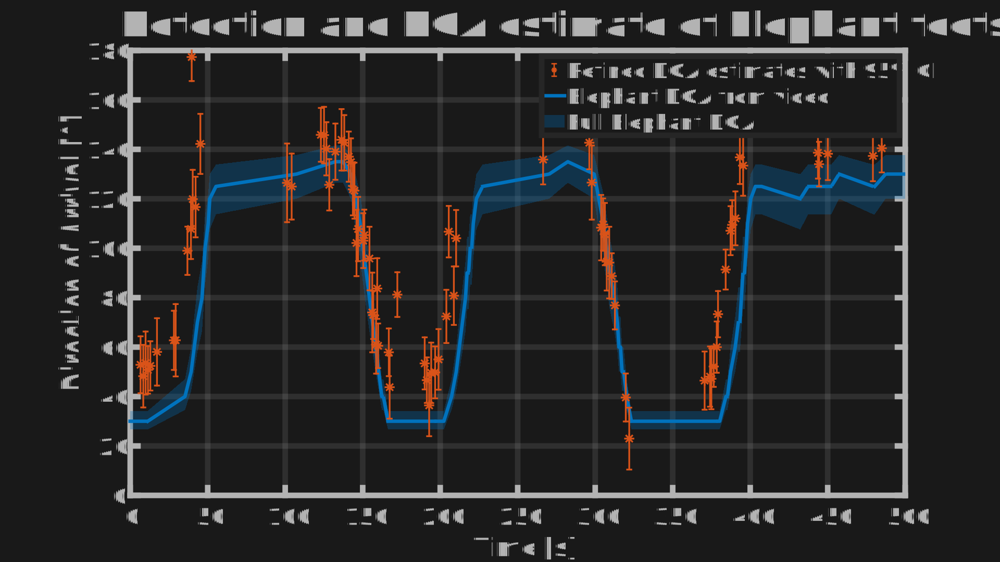

Seismic Detection of
Elephant Footsteps
Daniel Goderik, Albin Westlund, Gustav Zetterqvist,Fredrik Gustafsson & Gustaf Hendeby Paper ID: 64

Background
- Human-Elephant conflicts are a global problem
- Harm to both people, property and crops
- Hundreds of casualties in India each year
Background
- Automated warning system
- \[ \mbox{Last year}^{\small 1}\!\!\mbox{, proof of concept}\]
- Now, focus on detection
1. Zetterqvist, et al. Elephant DOA Estimation using a Geophone Network. In FUSION 2023.


Signal model
Signal model
\[ y_i(t) = \sum_n z_i^n\left(t\right) + e_i(t) \mathrm{,}\] $z_i^n(t)$: $n$th event for geophone $i$
$e_i(t)$: ambient noise
Event Detection
- For event detection we use Kurtosis
- \[Q[k] = \frac{\frac{\sum_{l=k-N+1}^{k} (\bar{y}[l]-\mu[k])^4}{N}}{\left(\frac{\sum_{l=k-N+1}^{k} (\bar{y}[l]-\mu[k])^2}{N}\right)^2} \]
- \[ Q[k] \gt T \rightarrow \mbox{ Event}\]
Event Detection
Event Detection
Elephant Footstep Detection
Pre-processing
- Bandpass filter between 4 and 45 Hz
- Normalization
Signal Features
- Standard deviation
- Frequency peak
- Spectral centroid
- Frequency distribution
Direction of Arrival Estimation
\[ \mbox{Signal model}: z_i[k] = s\left[k - \tau_i\left(\phi[k]\right)\right] + e_i[k] \]
Direction of Arrival Estimation
\[ \mbox{Signal model}: z_i[k] = s\left[k - \tau_i\left(\phi[k]\right)\right] + e_i[k] \]
Delay-and-Sum Beamformer: \[ \hat{\phi}[k] = \arg\max_{\phi} \sum_{k=1}^N \left| \frac{1}{M} \sum_{i=1}^{M} z_i[k+\tau_i(\phi)] \right|^2 \]
Direction of Arrival Estimation


Experimental setup
 

Experimental setup

Data collection
| Animal | Kolmården | Kenya |
|---|---|---|
| Elephant | Asian | African |
| Human | ||
| Rihno | - | |
| Kulan | - | |
| Camel | - | |
| Buffalo | - |
Signal Frequency
 Signal Frequency
Signal Features
| Kolmården | ||
|---|---|---|
| Feature | Mean | σ |
| Standard Deviation | 0.08821 | 6.5e-4 |
| Frequency peak | 13.2 | 3.72 |
| Spectral Centroid | 19.1 | 3.62 |
| Frequency Ratio | 603.1 | 478.9 |
Signal Features
| Kolmården | Kenya | |||
|---|---|---|---|---|
| Feature | Mean | σ | Mean | σ |
| Standard Deviation | 0.08821 | 6.5e-4 | 0.08812 | 9.3e-4 |
| Frequency peak | 13.2 | 3.72 | 12.9 | 3.15 |
| Spectral Centroid | 19.1 | 3.62 | 18.3 | 3.53 |
| Frequency Ratio | 603.1 | 478.9 | 48.1 | 27.4 |
Detection Results
- Accuracy: Proportion of correct predictions
- Recall: Proportion of actual positives correctly predicted
- Precision: Proportion of predicted positives that are correct
- F1 score: Harmonic mean of precision and recall
Detection Results
| Animal | TP | TN | FP | FN |
|---|---|---|---|---|
| Elephant | 17 / 31 / 35 | 0 / 0 / 0 | 0 / 1 / 1 | 40 / 26 / 22 |
| Human | 0 / 0 / 0 | 57 / 57 / 54 | 0 / 0 / 3 | 0 / 0 / 0 |
| Rhino | 0 / 0 / 0 | 57 / 54 / 53 | 0 / 3 / 4 | 0 / 0 / 0 |
| Camel | 0 / 0 / 0 | 57 / 57 / 57 | 0 / 0 / 0 | 0 / 0 / 0 |
| Kulan | 0 / 0 / 0 | 49 / 49 / 49 | 0 / 0 / 0 | 0 / 0 / 0 |
| Total | 17 / 31 / 35 | 220 / 217 / 213 | 0 / 4 / 8 | 40 / 26 / 22 |
Detection Results
| ±σ(s) | Accuracy | Recall | Precision | F1 score |
|---|---|---|---|---|
| 1 | 0.86 | 0.30 | 1 | 0.46 |
| 1.5 | 0.89 | 0.54 | 0.89 | 0.67 |
| 2 | 0.89 | 0.61 | 0.81 | 0.7 |
Comparison
| Proposed algorithm | Last year | |||||||
|---|---|---|---|---|---|---|---|---|
| Animal | TP | TN | FP | FN | TP | TN | FP | FN |
| Elephant | 8 | 0 | 1 | 2 | 10 | 0 | 8 | 0 |
| Human | 0 | 10 | 0 | 0 | 0 | 9 | 1 | 0 |
| Rhino | 0 | 10 | 0 | 0 | 0 | 9 | 1 | 0 |
| Camel | 0 | 10 | 0 | 0 | 0 | 10 | 0 | 0 |
| Kulan | 0 | 10 | 0 | 0 | 0 | 10 | 0 | 0 |
| Total | 8 | 40 | 1 | 2 | 10 | 38 | 10 | 0 |
DOA Results
Conclusions
- Proposed algorithm reduces false alarms
- High accuracy for elephant detection
- Direction of arrival estimation is accurate
Thank you!
Hidden Slides
This slide is visible in the source, but hidden when the presentation is viewed. You can show all hidden slides by setting the `showHiddenSlides` config option to `true`.